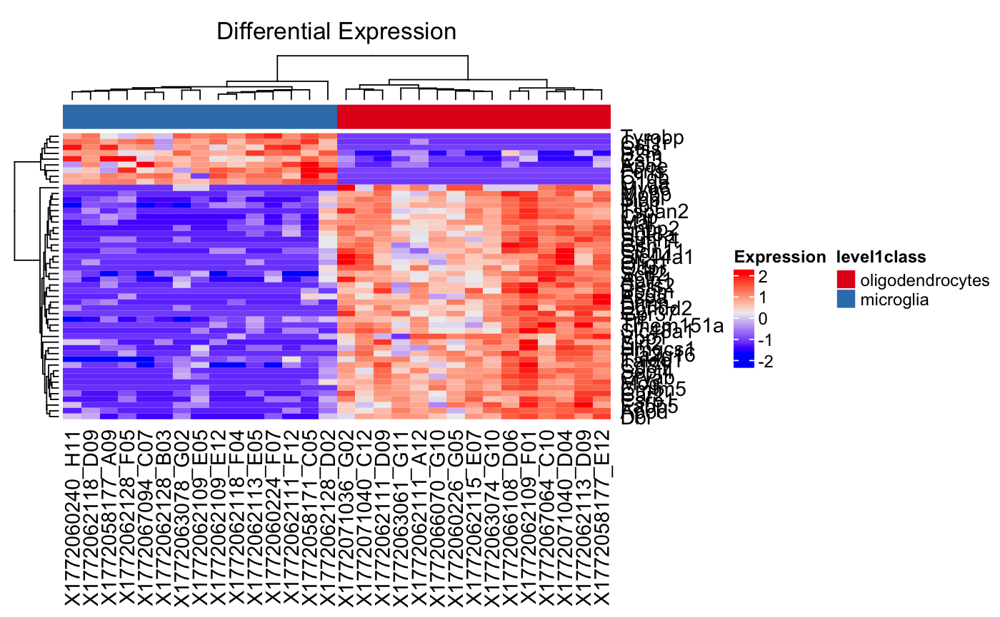

Plot Differential Expression
plot_DiffEx(inSCESet, use_assay = "logcounts", condition, geneList, clusterRow = TRUE, clusterCol = TRUE, displayRowLabels = TRUE, displayColumnLabels = TRUE, displayRowDendrograms = TRUE, displayColumnDendrograms = TRUE, annotationColors = NULL, columnTitle = "Differential Expression")
| inSCESet | Input data object that contains the data to be plotted. Required |
|---|---|
| use_assay | Indicate which assay to use. Default is "logcounts" |
| condition | The condition used for plotting the heatmap. Required |
| geneList | The list of genes to put in the heatmap. Required |
| clusterRow | Cluster the rows. The default is TRUE |
| clusterCol | Cluster the columns. The default is TRUE |
| displayRowLabels | Display the row labels on the heatmap. The default is TRUE. |
| displayColumnLabels | Display the column labels on the heatmap. The default is TRUE |
| displayRowDendrograms | Display the row dendrograms on the heatmap. The default is TRUE |
| displayColumnDendrograms | Display the column dendrograms on the heatmap. The default is TRUE. |
| annotationColors | Set of annotation colors for color bar. If null, no color bar is shown. default is NULL. |
| columnTitle | Title to be displayed at top of heatmap. |
ComplexHeatmap object for the provided geneList annotated with the condition.
data("GSE60361_subset_sce") res <- scDiffEx(GSE60361_subset_sce, use_assay = "logcounts", "level1class", diffexmethod = "limma")#> Warning: Zero sample variances detected, have been offset away from zeroplot_DiffEx(GSE60361_subset_sce, condition = "level1class", geneList = rownames(res)[1:50], annotationColors = "auto")